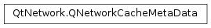

QNetworkCacheMetaData¶
Synopsis¶
Functions¶
- def
__eq__(other) - def
__ne__(other) - def
attributes() - def
expirationDate() - def
isValid() - def
lastModified() - def
saveToDisk() - def
setAttributes(attributes) - def
setExpirationDate(dateTime) - def
setLastModified(dateTime) - def
setSaveToDisk(allow) - def
setUrl(url) - def
swap(other) - def
url()
Detailed Description¶
The
PySide2.QtNetwork.QNetworkCacheMetaDataclass provides cache information.
PySide2.QtNetwork.QNetworkCacheMetaDataprovides information about a cache file including the url, when it was last modified, when the cache file was created, headers for file and if the file should be saved onto a disk.
-
class
PySide2.QtNetwork.QNetworkCacheMetaData¶ -
class
PySide2.QtNetwork.QNetworkCacheMetaData(other) Parameters: other – PySide2.QtNetwork.QNetworkCacheMetaDataConstructs an invalid network cache meta data.
Constructs a copy of the
otherPySide2.QtNetwork.QNetworkCacheMetaData.
-
PySide2.QtNetwork.QNetworkCacheMetaData.attributes()¶ Return type: Returns all the attributes stored with this cache item.
See also
PySide2.QtNetwork.QNetworkCacheMetaData.setAttributes()QNetworkRequest.Attribute
-
PySide2.QtNetwork.QNetworkCacheMetaData.expirationDate()¶ Return type: PySide2.QtCore.QDateTimeReturns the date and time when the meta data expires.
-
PySide2.QtNetwork.QNetworkCacheMetaData.isValid()¶ Return type: PySide2.QtCore.boolReturns
trueif this network cache meta data has attributes that have been set otherwise false.
-
PySide2.QtNetwork.QNetworkCacheMetaData.lastModified()¶ Return type: PySide2.QtCore.QDateTimeReturns the date and time when the meta data was last modified.
-
PySide2.QtNetwork.QNetworkCacheMetaData.__ne__(other)¶ Parameters: other – PySide2.QtNetwork.QNetworkCacheMetaDataReturn type: PySide2.QtCore.boolReturns
trueif this meta data is not equal to theothermeta data; otherwise returnsfalse.See also
PySide2.QtNetwork.QNetworkCacheMetaData.operator==()
-
PySide2.QtNetwork.QNetworkCacheMetaData.__eq__(other)¶ Parameters: other – PySide2.QtNetwork.QNetworkCacheMetaDataReturn type: PySide2.QtCore.boolReturns
trueif this meta data is equal to theothermeta data; otherwise returnsfalse.See also
PySide2.QtNetwork.QNetworkCacheMetaData.operator!=()
-
PySide2.QtNetwork.QNetworkCacheMetaData.saveToDisk()¶ Return type: PySide2.QtCore.boolReturns is this cache should be allowed to be stored on disk.
Some cache implementations can keep these cache items in memory for performance reasons, but for security reasons they should not be written to disk.
Specifically with http, documents marked with Pragma: no-cache, or have a Cache-control set to no-store or no-cache or any https document that doesn’t have “Cache-control: public” set will set the to false.
-
PySide2.QtNetwork.QNetworkCacheMetaData.setAttributes(attributes)¶ Parameters: attributes – Sets all attributes of this cache item to be the map
attributes.
-
PySide2.QtNetwork.QNetworkCacheMetaData.setExpirationDate(dateTime)¶ Parameters: dateTime – PySide2.QtCore.QDateTimeSets the date and time when the meta data expires to
dateTime.
-
PySide2.QtNetwork.QNetworkCacheMetaData.setLastModified(dateTime)¶ Parameters: dateTime – PySide2.QtCore.QDateTimeSets the date and time when the meta data was last modified to
dateTime.
-
PySide2.QtNetwork.QNetworkCacheMetaData.setSaveToDisk(allow)¶ Parameters: allow – PySide2.QtCore.boolSets whether this network cache meta data and associated content should be allowed to be stored on disk to
allow.
-
PySide2.QtNetwork.QNetworkCacheMetaData.setUrl(url)¶ Parameters: url – PySide2.QtCore.QUrlSets the URL this network cache meta data to be
url.The password and fragment are removed from the url.
-
PySide2.QtNetwork.QNetworkCacheMetaData.swap(other)¶ Parameters: other – PySide2.QtNetwork.QNetworkCacheMetaDataSwaps this metadata instance with
other. This function is very fast and never fails.
-
PySide2.QtNetwork.QNetworkCacheMetaData.url()¶ Return type: PySide2.QtCore.QUrlReturns the URL this network cache meta data is referring to.
© 2018 The Qt Company Ltd. Documentation contributions included herein are the copyrights of their respective owners. The documentation provided herein is licensed under the terms of the GNU Free Documentation License version 1.3 as published by the Free Software Foundation. Qt and respective logos are trademarks of The Qt Company Ltd. in Finland and/or other countries worldwide. All other trademarks are property of their respective owners.